Step-by-step guide for users who have not yet registered on Reli.one
or are ready to create a separate seller account with a new email address.
Version: June 2026
1. Choosing an account type
Reli.one has two independent account types: buyer and seller.
If you want to sell products, choose Become a seller during registration,
not “Sign up as a buyer”.
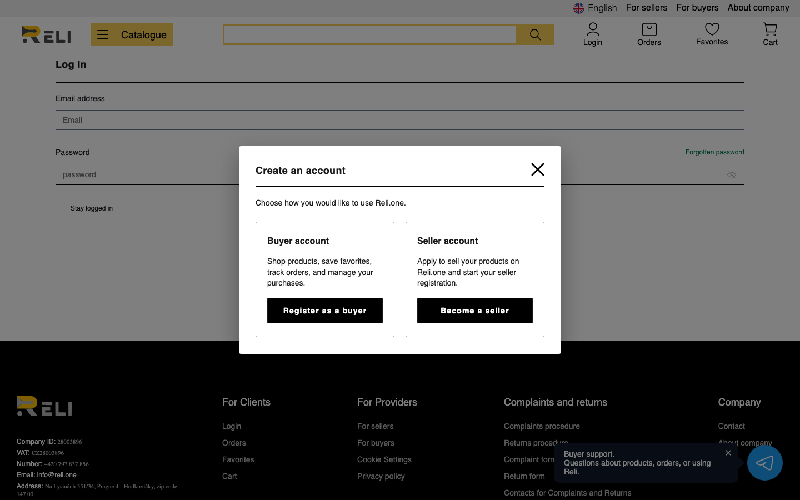
Fig. 1 — Account type selection dialog during site registration
Check the box to agree to the terms and privacy policy, then click Sign Up.
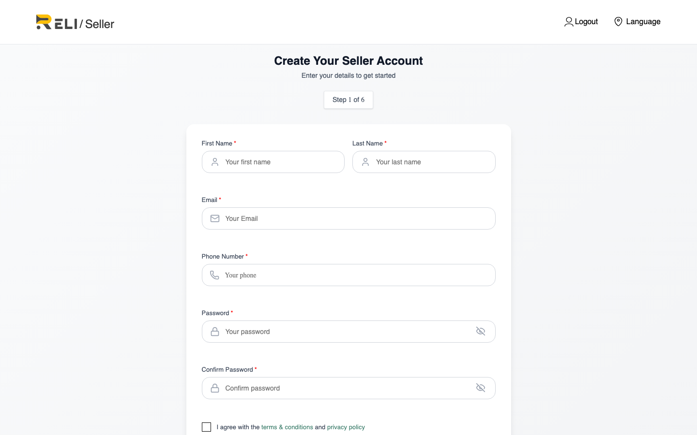
Fig. 2 — “Create Your Seller Account” page
Step 2.2 — Confirm your email
A 6-digit code will be sent to the email address you provided. Enter it on the confirmation page.
If you do not receive the email, check your Spam folder or request a new code.
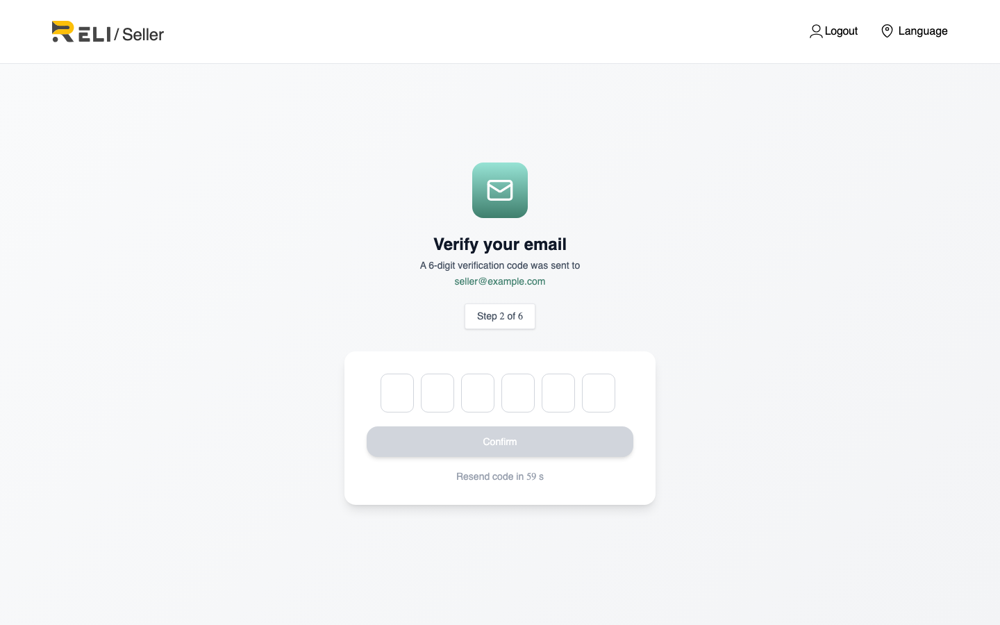
Fig. 3 — Email confirmation (OTP)
3. Seller onboarding
After email confirmation, the seller verification process (onboarding) begins.
You must complete it fully before you can list products.
Step 3.1 — Choose seller type
Self-employed / sole proprietor — sole trader, self-employed person, or individual engaged in business activity;
Company / legal entity — legal entity (company).
The data and documents requested depend on the type you select.
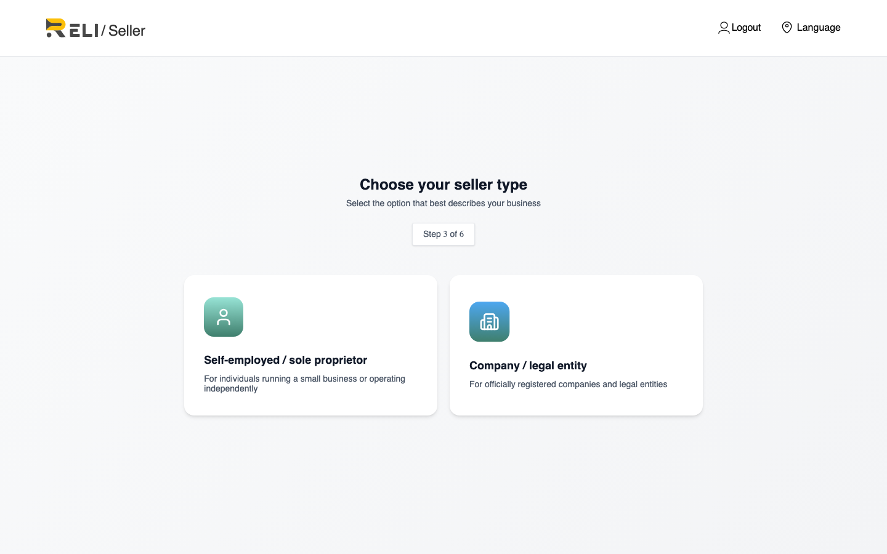
Fig. 4 — Choosing type: sole proprietor or company
Step 3.2 — Autofill by IČO via public registry (for Czech sellers)
If your company or business activity is registered in the Czech Republic,
Reli.one can pull some legal and tax data from the public registry
using your IČO number.
This is an optional helper feature. You can always click
Fill manually and enter data without querying the registry. Autofill
does not replace document uploads or manual review of your application.
What is IČO
IČO (Identifikační číslo osoby) is an 8-digit identification number
for a legal entity or entrepreneur in the Czech Republic. Before querying the public registry, the system validates the IČO format
and checksum. An invalid number is not sent to the registry.
On first open, a “Prefill Czech company legal data” dialog appears.
Enter a Czech IČO (8 digits) and click Load from public registry.
Review the Public registry preview block: name, IČO, legal form, registered address, DIČ hint.
Click Apply to onboarding — data is copied into the form (empty fields only).
If needed, repeat the load in the Company information block with Load from public registry, then Apply to form.
If the public registry returned representative data, the preview may show a Representative suggestions block — click Apply representative to fill in name and role (data remains editable).
Correct any errors manually, complete remaining fields, and continue onboarding.
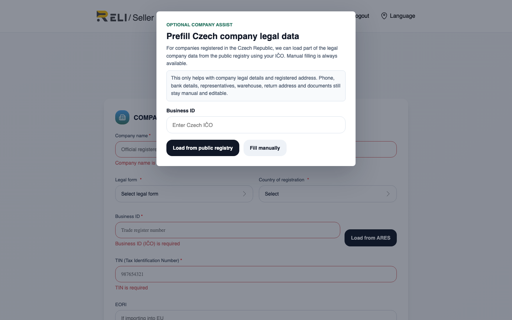
Fig. 5 — Initial autofill dialog for a company (enter IČO)
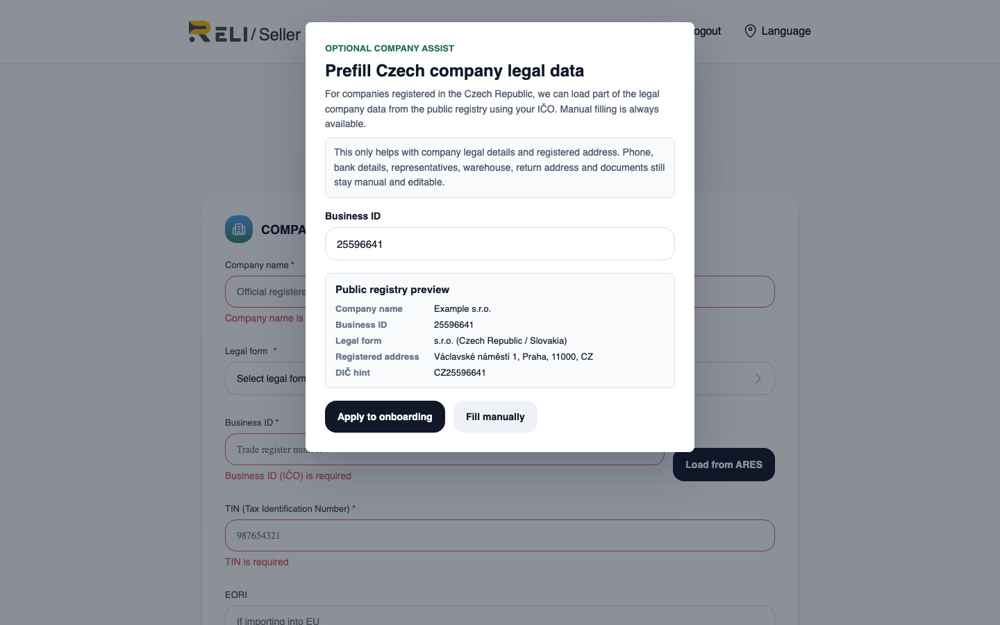
Fig. 6 — IČO entered, data received from the public registry (Public registry preview)
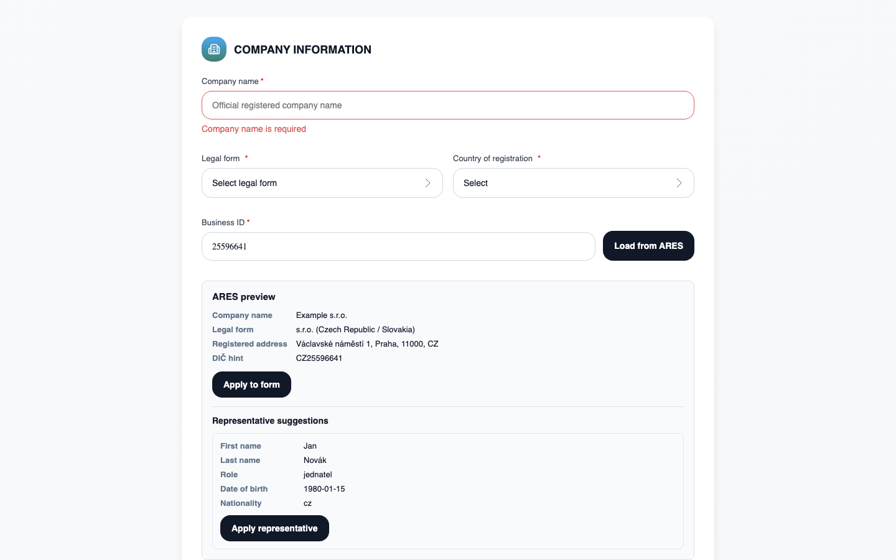
Fig. 7 — Public registry preview and “Apply to form” button in the Company information block
Step by step: sole proprietor / self-employed (Self-employed)
On first visit, a “Prefill Czech business/tax details” dialog appears.
Enter IČO and click Load from public registry.
Review the preview: registry name, IČO, registered address, DIČ/TIN hint.
Click Apply to onboarding.
The same actions are available in the Tax information block: IČO field → Load from public registry → Apply to form.
Complete personal data, documents, bank details, warehouses, and addresses manually.
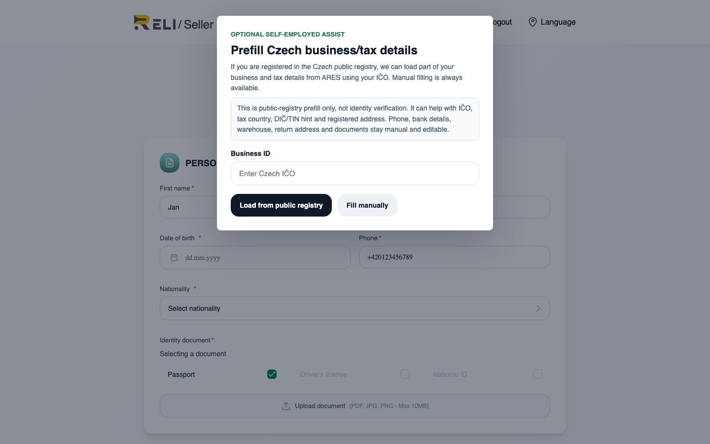
Fig. 8 — Initial autofill dialog for self-employed / sole proprietor
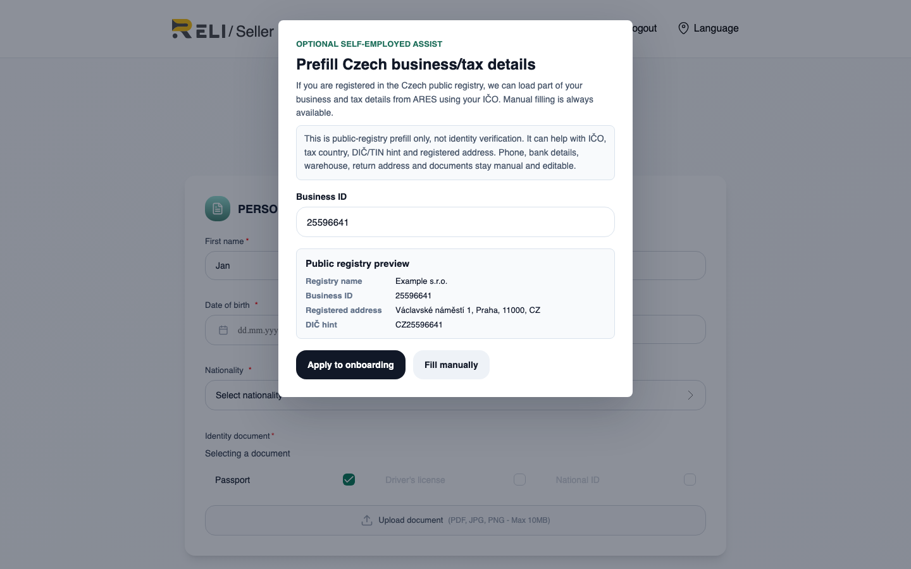
Fig. 9 — IČO entered, data received from the public registry (Public registry preview)
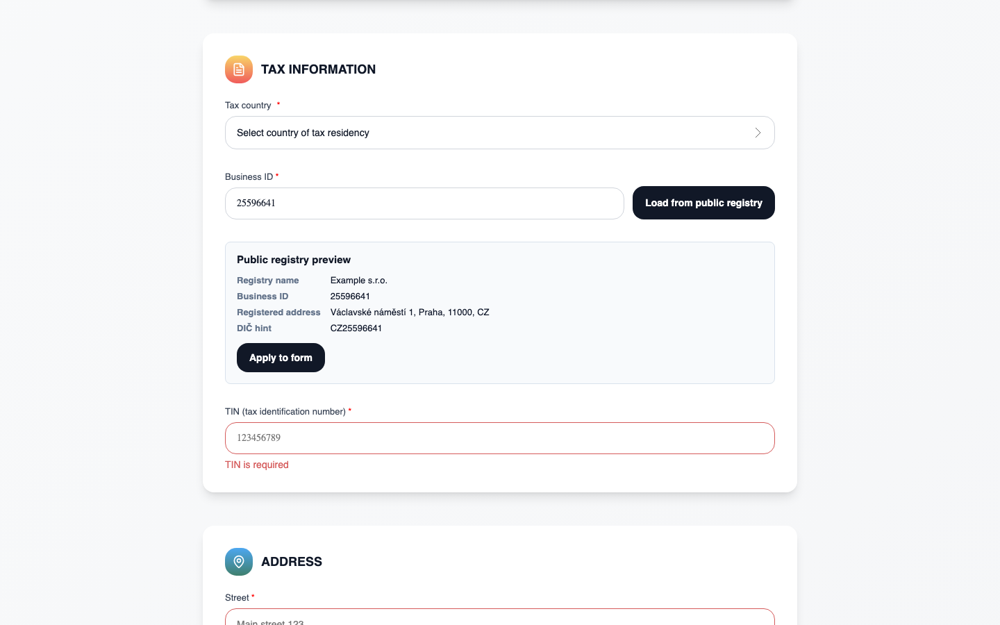
Fig. 10 — Preview in the Tax information block and “Apply to form” button
Fields the public registry can fill
Public registry data
Company
Sole proprietor / self-employed
Name (obchodní jméno)
Company name
Registry name (reference only)
IČO
Business ID (IČO)
IČO
Legal form
Legal form
—
Country of registration
Czech Republic (CZ)
Tax country = CZ
Registered address (street, city, postal code)
Company address
Address (tax block)
DIČ (hint)
TIN / DIČ
TIN (as hint)
Representative (name, role)
Representative (hint)
—
DIČ from the public registry is only a hint. This is a tax identifier from the registry;
it does not confirm VAT payer status (DPH/VAT). Verify DIČ/TIN
and correct it manually if needed before submitting your application.
What the public registry does not fill (enter manually)
phone and email (except those already provided during registration);
bank details (IBAN, SWIFT/BIC, account holder);
for a company — full representative personal data (date of birth, citizenship) if the hint was not applied;
shipping warehouse address;
returns address;
uploaded documents (ID, company extract, proof of address, etc.).
Errors and special cases
Situation
What to do
Invalid IČO format
Correct the number (8 digits, valid checksum) and retry the request
IČO not found in the public registry
Continue filling the form manually — this is a normal scenario
Public registry temporarily unavailable
Try again later or fill all fields manually
Warning Inactive company / Inactive registry record
The entity is inactive in the registry (e.g., liquidated). Verify IČO; the application still goes through manual review
DIČ “Derived from IČO”
The registry did not return DIČ — the system suggested a computed value. Always verify the value
After submitting your application (Submit for Verification), the backend additionally cross-checks
data against the public registry and stores the result as a hint for the moderator.
This does not replace manual review: application status remains Pending verification until the Reli.one team decides.
Limitation: at present, public registry autofill works for entities
registered in the Czech Republic. For other countries, fill the form manually.
Step 3.3 — Complete your details and upload documents
For self-employed / sole proprietor, the system will sequentially request:
personal data (date of birth, citizenship, phone);
tax information (country, TIN, IČO if applicable);
Fig. 11 — “Seller information” form (details and documents)
Step 3.4 — Review your data and submit the application
On the review screen, make sure all sections are filled in correctly, then click
Submit for Verification. Application status changes to
Pending verification — awaiting administrator decision.
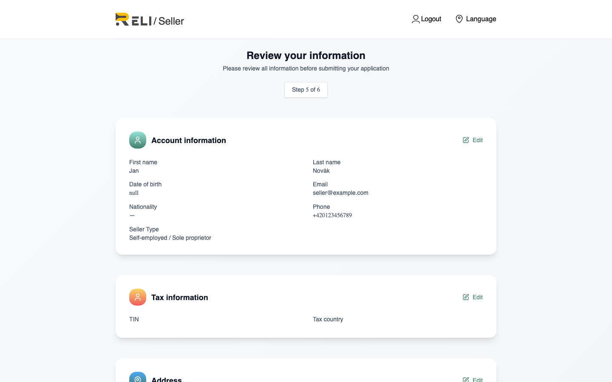
Fig. 12 — Review screen before submitting the application
Step 3.5 — Wait for approval
After submission, you will see confirmation that your application was received. The Reli.one team makes the decision.
If approved, you gain access to the seller dashboard; if rejected — an email with the reason
and the option to correct your data and resubmit.
After approval, open the seller dashboard at
https://reli.one/seller/login
and go to the products section. Detailed listing instructions are in a separate PDF:
“Listing Products”.